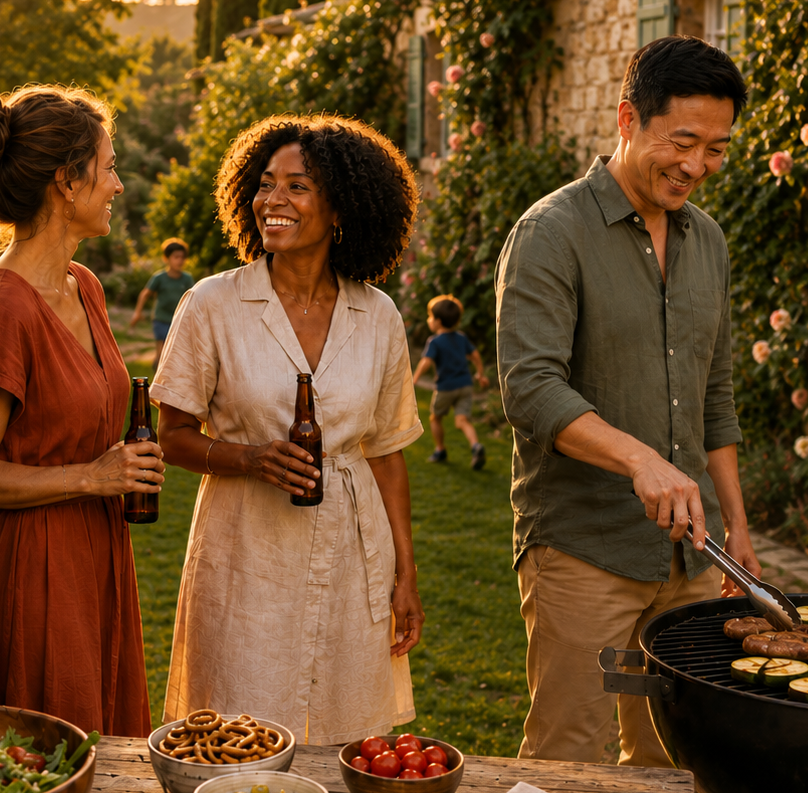
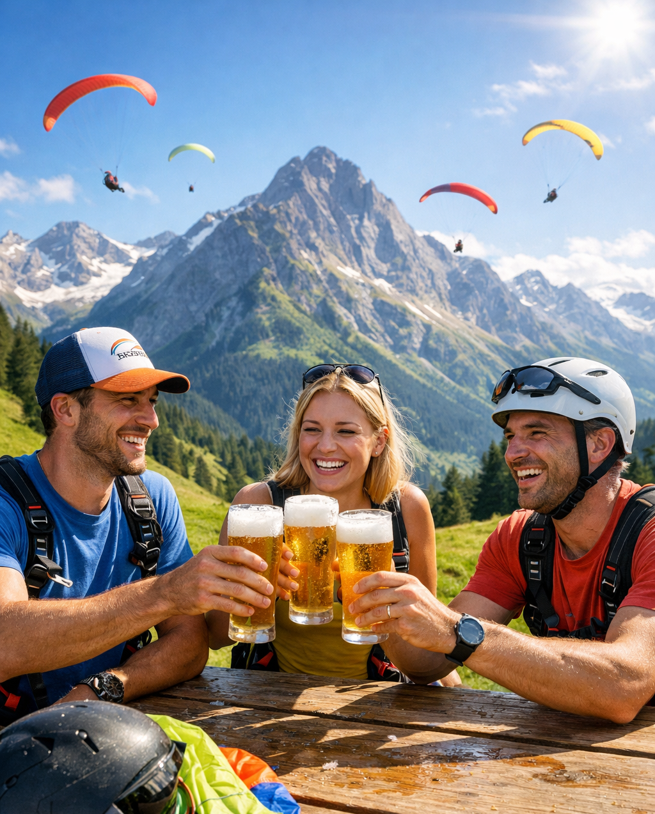
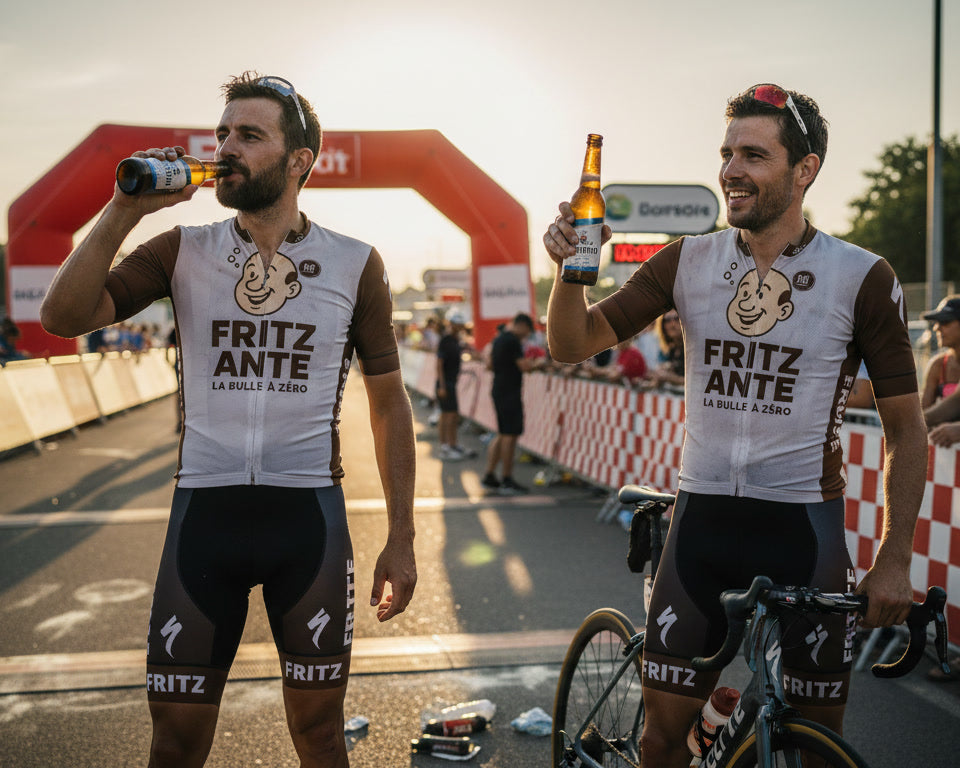

Warsteiner Alkoholfrei2,40€

Pour les moments qui méritent d'être savourés.
Certaines bières se choisissent selon le moment. D'autres selon un besoin précis. Chez Fritz Ante, nous sélectionnons les bonnes bières sans alcool pour récupérer, partager, décompresser — ou répondre à un critère clair comme le 0.0, le sans sucre, le sans gluten ou la récupération.
Trois sélections claires pour les grands moments de la maison : récupérer, partager, décompresser.




Nous sommes une équipe qui sélectionne des bières sans alcool allemandes pour leur goût, leur équilibre et leur vraie qualité brassicole.
Découvrir la marque →Chaque occasion a sa bière : parcourez tous nos moments, nos packs et notre sélection complète.
Voir toute la sélection →